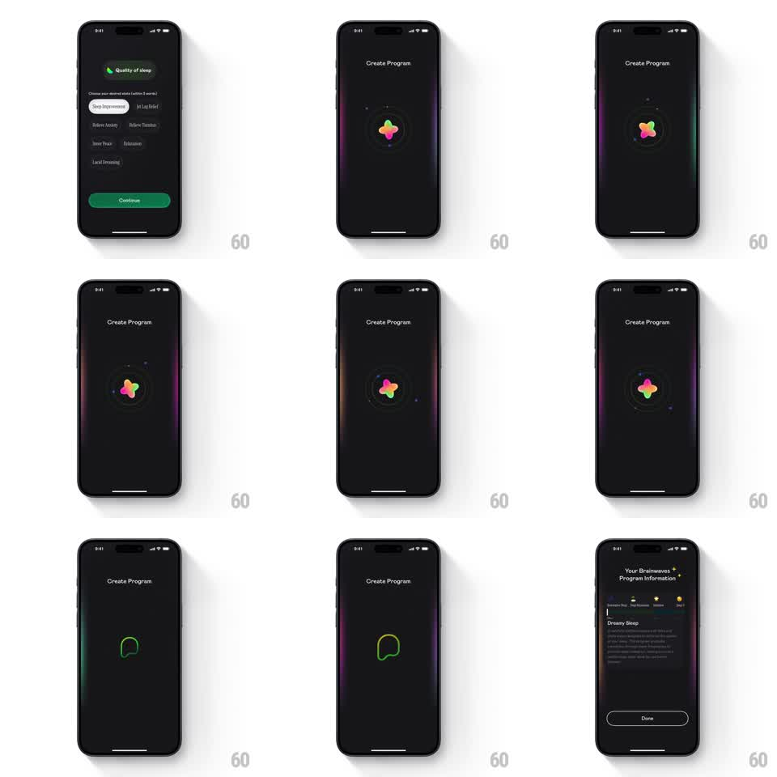

Media
Frame-by-frame

Rebuild this animation 1:1: a sleep app's "Create Program" loading transition - a morphing gradient 4-point star spins slowly inside a dashed orbital ring with drifting particles, then resolves into a line-drawn icon before the program info sheet slides in.

Rebuild this animation 1:1: a sleep app's "Create Program" loading transition - a morphing gradient 4-point star spins slowly inside a dashed orbital ring with drifting particles, then resolves into a line-drawn icon before the program info sheet slides in. ## Integration Integration: stack-agnostic spec - springs given as stiffness/damping, timed motions as duration + curve; map every value to your framework and animation library of choice. ## Scene Dark full-screen loading stage: "Create Program" title top-center, a soft gradient blob star (green/pink/orange, 4 rounded points) at center inside a dashed circular track, tiny particles orbiting, faint colored edge glows on the screen borders. Ends on a "Program Information" sheet (title, tab chips, description text, Done button). ## Motion spec Pattern: generative loading loop -> resolve, ~4s total. - The star morphs continuously: points swell and rotate (scale 1 -> 1.15 -> 1, rotate 0 -> 360deg over 6s, linear), gradient hues slowly cycling. - The dashed ring rotates opposite the star (0 -> -360deg, 8s, linear). - 4-6 particles drift along the ring with staggered phases, opacity twinkling 0.3 -> 1. - Screen edge glows (green left, magenta right) breathe at 0.2 -> 0.4 opacity, 3s cycle. - Resolve: star collapses (scale -> 0, 250ms, ease-in) and a green line icon draws on (stroke-dashoffset, 400ms); 300ms later the info sheet slides up (translateY 100% -> 0, 350ms, ease-out). ## Calibration - Loop motions are linear and continuous; easing on a loading loop makes it feel broken. - The resolve must feel earned: hold the loop at least 2 full seconds before collapsing. ## Reduced motion Static star at 80% opacity with the dashed ring still; resolve becomes a 300ms crossfade to the sheet. ## Don't miss - Star and ring rotate in opposite directions - same-direction rotation reads as one rigid disc. - The edge glows are ambient, not tied to the star's cycle; syncing them looks mechanical.